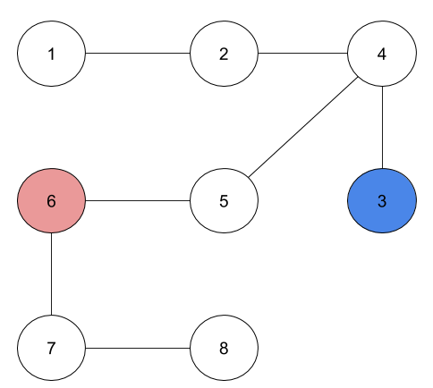
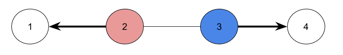
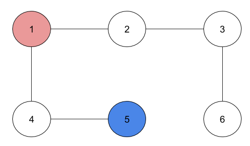

<%@ page pageEncoding="UTF-8"%>
Problem D: Courage test
P「今日は肝試し企画の番組の収録だ。」
O型智絵里「き、きもだめし……」
四村かな子「智絵里ちゃん大丈夫？」
月野茜「さすがPさん！一行で状況が明晰判明にわかる素晴らしい解説です！さあ！火の玉に向かって走りましょう！」
P「ルールは簡単、みんなで協力してこのエリアのすべての神社にお参りしてくるだけだ。」
茜「オーソドックスですね！早速神社に向かって走りましょう！」
かな子「でもここ、日本有数の神社密度で行かなくちゃいけない神社がたくさんあるんじゃなかったっけ……」
かな子「でも茜ちゃんがいれば心強いよ！」
P「ちなみにスタートは全員違う神社からスタート、合流も禁止だ。それじゃあ智絵里とかな子は初期位置についてくれ」
智絵里「うぅ……」
かな子「お、お菓子を持っていけば大丈夫！」
智絵里「頑張る……」
茜「プロデューサー！私はどうすれば！」
P「お前は賑やかしだ」
茜「えっ」
P「座ってろ」
茜「」
Problem
n個の神社とn-1本の道がある。神社には1~nの番号がついている。道は神社aiと神社biを繋ぎ、双方向に移動できる。それぞれの神社は、任意の神社から1本以上の道を経由して到達できる。また、任意の2つの神社の間の(迂回しない)経路は一意に定まる。
O型智絵里ちゃんと四村かな子ちゃんがそれぞれ神社uと神社vにいる。
今、2人を任意に移動させることを考える。ただし、移動とは、ある神社から1本の道を経由して別の神社に進むことである。
その際、以下のルールを満たしたい。
ルール
- 2人合わせて全ての神社を訪問する。
- 2人の移動数を同じにする。
- 1つの神社, 道は1人しか通れず、さらに1度しか通ることができない。
- 神社u, vは既に訪れているものとし、通ることはできない。
これらのルールを満たすことができるかどうかを判定し、できる場合は"Yes"を、できない場合は"No"を出力せよ。
Input
入力は以下の形式で与えられる。
n u v
a1 b1
a2 b2
...
an-1 bn-1
1行目に3つの整数n, u, vが空白区切りで与えられる。
2行目からn行目まで2つの整数ai, biが空白区切りで与えられる。
Constraints
入力は以下の条件を満たす。
- 2 ≤ n ≤ 105
- 1 ≤ ai, bi, u, v ≤ n
- u ≠ v
- ai < bi
- (ai, bi) ≠ (aj, bj) (i ≠ j)
Output
ルールを満たすことができるかどうかを判定し、できる場合は"Yes"を、できない場合は"No"を1行に出力する
Sample Input 1
4 2 4
1 2
1 3
1 4
Sample Output 1
No
Sample Input 2
8 3 8
1 2
2 4
3 4
4 5
5 6
6 7
7 8
Sample Output 2
Yes

Sample Input 3
2 1 2
1 2
Sample Output 3
Yes

Sample Input 4
6 1 5
1 2
1 4
2 3
4 5
3 6
Sample Output 4
No
